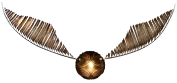
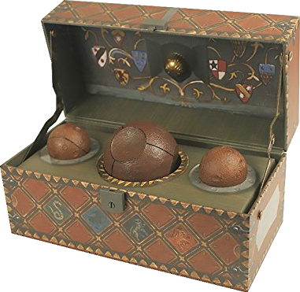
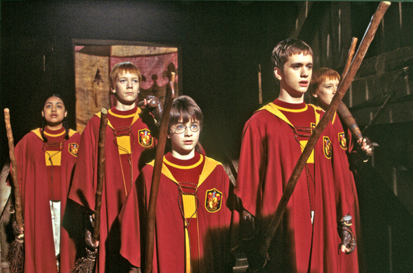

La duración de un encuentro de Quidditch es impredecible e indefinida. El juego termina cuando la Snitch dorada ha sido atrapada por alguno de los Buscadores. Mientras tanto, el juego sigue. El record de duración de un partido de Quidditch esta en 3 meses, donde tenían que cambiar los jugadores constantemente.
Como norma general, una vez encima de las escobas y una vez empezado el partido, no se puede hechizar a ningún jugador, ni usar ningún objeto mágico como sería la varita, así también están prohibidas el uso de cualquier poción mágica tales como el "Felix Felicis" o poción de la suerte, la cual está estrictamente prohibida para cualquier evento deportivo.


